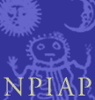

Good general-purpose site run by Jungian analyst Donald Williams. Comprehensive guide to resources and a bulletin board. Updated frequently.
Includes a database called JungCW, which allows you to search for keywords in Dr. C.G Jung's Collected Works.
Centerpoint is an integral part of The Educational Center, a not-for-profit institution dedicated to the field of transformational learning since 1941. Since the early 1960s, The Center has developed curricula based on two interlocking models: the process of individuation elaborated by depth psychologist C. G. Jung, and a patterned sequence of planning and Socratic delivery that connects the inner world of the “student” with the archetypal content of sacred and secular literature.

Based in Seattle, this non-profit organization provides professional seminars and analyst education programs, and the web site has a list of member analysts.
A mutually supportive organization of psychotherapists actively engaged in the study and application of Analytical Psychology. The central purpose of the JPA is to further the professional growth, development, and education of its members.
Programs, bookstore information, and more.
Programs, Library Journal, continuing education, and psychotherapy services.
Web site of this Portland-based group.
Conferences in Vermont and Assisi, Italy.
"Studies in Jungian psychology by Jungian analysts."
"Publishing psychological ideas for over half a century."
Publisher of the Journal of Analytical Psychology.
Have you ever had a dream in which Carl Jung appeared? Sue Wheeler is collecting and studying these dreams.
A chat site for discussing Archetypal Psychology, particularly the ideas of James Hillman, C.G. Jung, and others.
A site based in Greece that offers information about classes, seminars, tours, and more.
C.G. Jung Society, Seattle home page
Updated: 17 April 2005